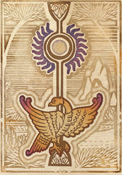
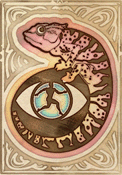
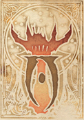
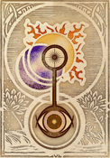
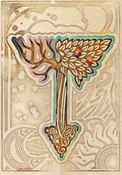

Écoles de Magie
Les Écoles de Magie
Les écoles de magie sont une classification des sorts basés sur la fonction de ces derniers. Ainsi une même école de magie est constituée de sort de plusieurs domaines (élémentaires, fondamentaux ou primordiaux). La magie peut être étudiée sous couvert d’écoles : Le lanceur de sort se spécialise donc dans une fonction dans laquelle il s’offre un plus large panel de possibilités.
On distingue ainsi plusieurs grandes écoles de magies :
Destruction
Détruire ce qui est matériel ou immatériel, vivant ou non. Opposée à : Restauration
- Dégâts directs ou progressifs (feu, glace, acide, force brute, etc.)
- Dissolution d’énergie, d’objets ou d’enchantements
- Démolition de structures
- Sorts de flétrissement ou d’annihilation
Restauration
Rétablir l’intégrité physique ou mentale des êtres vivants. Opposée à : Destruction
- Soins de blessures, maladies, empoisonnements
- Régénération ou purification
- Annulation d’altérations affectant des êtres vivants
- Reconstitution de l’équilibre vital
Abjuration
Annuler, stopper ou se protéger contre des effets hostiles. Opposée à : n/a
- Contresorts, dissipation, interruption
- Boucliers magiques, barrières, immunités
- Suppression de magie dans une zone
- Runes de protection ou de rejet
Divination
Percevoir, découvrir, révéler ce qui est caché ou inconnu. Opposée à : n/a
- Lecture des pensées, visions à distance, détection magique
- Prédictions, augures, accès à des savoirs oubliés
- Analyse d’objets, d’êtres ou de lieux
- Clairvoyance, clairsentience, précognition
Invocation
Appeler des entités autonomes à soi pour obtenir leur aide. Opposée à : n/a
- Invocation de familiers, esprits, créatures ou entités
- Contrats ou pactes d’appel
- Portails, transpositions d’êtres
- Sorts d’appel conditionnel ou réactif
Évocation
Agir directement sur la réalité de façon ponctuelle. Opposée à : n/a
- Télékinésie, lévitation, propulsion, manipulation d’objets
- Création temporaire de matière ou d’éléments
- Génération de sons, lumières, odeurs, impulsions
- Activation ou manipulation de mécanismes
- Sorts d’effet immédiat, sans enchantement
Malédiction
Appliquer des enchantements maintenus nuisibles. Opposée à : Bénédiction
- Enchantements affaiblissants, gênants, négatifs
- Zones de maléfices, auras handicapantes
- Marquages magiques, infections d’origine magique
- Malchances, peurs, handicaps persistants
Bénédiction
Appliquer des enchantements maintenus bénéfiques. Opposée à : Malédiction
- Renforcement physique ou mental
- Auras protectrices ou motivantes
- Avantages en compétences ou en défense
- Amplification des capacités naturelles
Conjuration
Conjurer la magie pure pour créer des formes utiles via des enchantements. Opposée à : Altération
- Création d’armes, murs, structures magiques temporaires
- Zones magiques (silence, obscurité, anti-magie)
- Enchantements utilitaires, sans but offensif ou défensif direct
- Créations maintenues par la volonté du mage
Altération
Modifier l’état ou la structure des objets, de la matière ou de la magie elle-même. Opposée à : Conjuration
- Transformation de matériaux ou d’objets
- Réparation, détérioration ou amélioration d’objets
- Effets conditionnels (étourdissement, confusion, immobilisation…)
- Changements d’apparence, d’état physique ou mental
- Soins structurels aux objets, modifications durables.
L'École de la Destruction
L’école de la Destruction canalise la puissance brute de la magie pour anéantir, blesser et réduire à néant toute chose, qu’elle soit vivante ou inerte.
Les mages de cette école apprennent à manipuler aussi bien les énergies élémentaires que les forces fondamentales de la matière, et à les concentrer en un seul objectif : provoquer la ruine. Qu’il s’agisse de flammes, de froid, d’ondes de choc ou de décharges pures, la Destruction ne fait jamais dans la subtilité – elle impose, brise, consume. Les pratiquants sont des Destructeurs.
Cône de Glace
Difficulté : 14, Drain : 14 Mot de pouvoir : Destruction (Ruptura (Rupture) / Kinrupt (Kin + rupt)) : Produit un effet d'attaque physique (armure) infligeant [Magnitude] de dégâts physique (PV) basés sur l'élément [clé]. Mot de diffusion : Contact : Portée : Mêlée, Vecteur : Touché, Cible soit possible. Mot de propagation : Cône : Touche une cible, 3 cases de largeur et 2 cases de profondeur derrières elles (AOE spéciale).
Boule de Feu
Difficulté : 20, Drain : 18 Mot de pouvoir : Destruction (Ruptura (Rupture) / Kinrupt (Kin + rupt)) : Produit un effet d'attaque physique (armure) infligeant [Magnitude] de dégats physique (PV) basés sur l'élément [clé]. Mot de diffusion : Projectile : Portée : Portée magique x2, Vecteur : Vue. Mot de propagation : Unique : Touche une cible unique. Mot de structure : Souffle : Le sort s'applique normalement mais une version diminuée du sort affecte également les cibles adjacentes (en AOE la portée de ce souffle est équivalente à la distance d'AOE). Modificateurs de Magnitude : PWR +0/-2
Déflagration Psychique
Difficulté : 10, Drain : 14
Mot de pouvoir : Profanation (PoLuo (Souiller) / MunpoLu (Mun + poLu)) : Génère un enchantement négatif qui augmente la valeurs actuel de corruption de [Magnitude/5].
Mot de diffusion : Soi : Portée : Sans, Vecteur : Sans, Cible soi possible.
Mot de propagation : Cercle : Comme carré mais ignore la cible (n'affecte que les cases à proximité donc, utile pour les novas).
Mot de liaison : Large : La zone de propagation du sort est doublée.
Doigt de Fissure
Difficulté : 12, Drain : 12
Mot de pouvoir : Dématérialisation (Materia (Matière) / Keldemater (Kel + demater)) : Produit un effet qui détruit [Magnitude/5] d'unités solide, [Magnitude] d'unités gazeux ou [Magnitude/2] d'unités liquide, une unité vaux 1 case x 1 case, affecte un élément vulgaire qui dépends de la [clé].
Mot de diffusion : Contact : Portée : Mêlée, Vecteur : Touché, Cible soi possible.
Mot de propagation : Unique : Touche une cible unique.
Doigt de Désintégration
Difficulté : 12, Drain : 12
Mot de pouvoir : Conflagration (Flagrare (Brûler) / Korflag (Kor + flag)) : Génère un effet qui oblige l'objet à réaliser [Magnitude/5] tests de solidité.
Mot de diffusion : Contact : Portée : Mêlée, Vecteur : Touché, Cible soi possible.
Mot de propagation : Unique : Touche une cible unique.
Trou de Mémoire
Difficulté : 14, Drain : 14
Mot de pouvoir : Amnésiation (Memoria (Mémoire) / Kinmemo (Kin + memo)) : Génère un effet qui supprime de la mémoire d'une cible un élément (personne, scène, objet ou lieu), le sort a un potenciel de [Magnitude²], le temps auquel remonte la mémoire réduit d'autant le potenciel, chaque minutes nécessite 1 de potenciel, un test de détermination peux être effectué par la cible et si réussie le sort ne fonctionne pas.
Mot de diffusion : Manifestation : Portée : Portée magique x1, Vecteur : Vue, Cible soi possible.
Mot de propagation : Unique : Touche une cible unique.
Mot de Mort
Difficulté : 18, Drain : 16
Mot de pouvoir : Suppression (Premo (Presser, supprimer) / Barpremo (Bar + premo)) : Génère un effet qui provoque une décharge de [Magnitude] à un enchantement ciblé.
Mot de diffusion : Mot : Portée : Portée magique x3, Vecteur : Voix.
Mot de propagation : Unique : Touche une cible unique.
Présage Sanglant
Difficulté : 14, Drain : 14
Mot de pouvoir : Corruption (Rumpo (Briser) / Aenrump (Aen + rump)) : Génère un effet qui convertis un maximum de [Magnitude/2] charge d'une condition positive au choix en charge de la condition négative opposée avec le double des charges ainsi converties, la cible peux réaliser un test de sauvegarde appropriée pour ce type de condition (ou opposition si supérieure), variante : Ce mot peux affecter toutes les conditions de la cible avec une difficulté augmentée de 4.
Mot de diffusion : Manifestation : Portée : Portée magique x1, Vecteur : Vue, Cible soi possible.
Mot de propagation : Unique : Touche une cible unique.
Myriade de Flèches Acide
Difficulté : 16, Drain : 14
Mot de pouvoir : Attrition (Tero (Frotter, user) / Kratrit (Kra + trit)) : Produit un effet d'attaque (ni armure, ni résolution) infligeant [Magnitude] de dégats physique temporaires (PE puis PV) basés sur l'élément [clé].
Mot de diffusion : Projectile : Portée : Portée magique x2, Vecteur : Vue.
Mot de propagation : Unique : Touche une cible unique.
Mot de structure : Pluie : Le sort s'applique au moment où il est lancé puis aux cinq rounds d'après, même cible, la cible doit être un lieu. Modificateurs de Magnitude : PWR -3/-3/-3/-3/-3/-3 (6)
Oeil du Cyclone
Difficulté : 10, Drain : 14
Mot de pouvoir : Percussion (Percutio (Frapper) / Kortio (Kor + tio)) : Produit un effet d'attaque physique (armure) infligeant [Magnitude] de dégats physique temporaires (PE puis PV) basés sur l'élément [clé], le jet est assuré (minimum des dés 4) et majoré (+1 par dés).
Mot de diffusion : Soi : Portée : Sans, Vecteur : Sans, Cible soi possible.
Mot de propagation : Cercle : Comme carré mais ignore la cible (n'affecte que les cases à proximité donc, utile pour les novas).
Mot de liaison : Large : La zone de propagation du sort est doublée.
Flèche de Feu
Difficulté : 18, Drain : 16
Mot de pouvoir : Destruction (Ruptura (Rupture) / Kinrupt (Kin + rupt)) : Produit un effet d'attaque physique (armure) infligeant [Magnitude] de dégats physique (PV) basés sur l'élément [clé].
Mot de diffusion : Projectile : Portée : Portée magique x2, Vecteur : Vue.
Mot de propagation : Unique : Touche une cible unique.
Mot de liaison : Long : La distance de diffusion du sort est doublée.
 |
|---|
L'École de la Restauration
Les mages de la Restauration voient dans la magie un moyen de préserver, soigner et protéger la vie sous toutes ses formes.
Grâce à une maîtrise subtile des flux vitaux, ils réparent chairs et esprits, purifient les corps affligés et restaurent ce qui a été brisé chez les êtres vivants.
Bienveillante par nature, la Restauration compte parmi les écoles les plus respectées du monde magique, et ceux qui la pratiquent sont connus sous le nom de Guérisseurs.
 |
|---|
L'École de l’Abjuration
L’Abjuration est l’art de dire « non » à la magie, à la violence… ou à toute intrusion indésirable.
Ses pratiquants maîtrisent les sorts de protection, d’interruption et de bannissement. Ils érigent des barrières, neutralisent les enchantements ennemis, imposent des règles ou des limites magiques impossibles à contourner.
Les Abjurateurs excellent à détourner, annuler ou empêcher, transformant la défense en une forme de contrôle absolu.
 |
|---|
L'École de la Divination
La Divination est l’art de voir au-delà du visible, de percevoir ce qui échappe aux sens ordinaires, et d’entrevoir ce qui fut, ce qui est… ou ce qui pourrait être. Les mages de cette école cherchent à comprendre le monde à travers ses secrets : détection d’aura, visions lointaines, intuitions précises, dialogues à distance ou lectures de futurs possibles. Les Devins, comme on les nomme, ne lancent pas seulement des sorts : ils scrutent le tissu même de la réalité à la recherche de vérités cachées.
 |
|---|
L'École des Invocations
L’Invocation permet d’appeler à soi des forces extérieures : créatures, esprits ou entités élémentaires venus prêter main-forte, qu’ils y soient contraints ou qu’ils obéissent de leur plein gré.
Les Invocateurs canalisent leur magie pour ouvrir un lien temporaire avec un autre plan d’existence, faisant apparaître un allié animé par une essence magique.
Ces entités obéissent selon un double principe : elles sont maintenues par un enchantement à charge, et tenues par une notion de services rendus. Lorsque l’un ou l’autre prend fin — l’énergie s’épuise, ou la dette est réglée — l’invocation disparaît et retourne à son plan d’origine.
 |
|---|
L'École des Évocations
L’Évocation consiste à manipuler directement la réalité pour en altérer temporairement les lois, selon la volonté du mage.
Les Évocateurs plient l’espace, la matière ou les phénomènes à leur désir : créer de la matière, déplacer des objets sans les toucher, générer lumière, son ou mouvement, interagir avec les éléments physiques ou forcer des mécanismes.
Contrairement à l’Invocation qui appelle des forces extérieures, l’Évocation agit ici et maintenant, en modifiant brièvement les règles naturelles du monde pour provoquer un effet immédiat.
 |
|---|
L'École des Bénédictions
Les Bénédictions consistent à insuffler une magie bénéfique dans un être ou un objet, par le biais d’enchantements temporaires conférant des effets positifs.
Les sorts de cette école améliorent les capacités, protègent, inspirent ou renforcent – qu’il s’agisse de vivacité accrue, de résistance surnaturelle ou d’un simple coup de chance.
Les mages qui pratiquent cette école sont parfois appelés Enchanteurs.
 |
|---|
L'École des Malédictions
Les Malédictions permettent d’infuser une magie néfaste dans un être ou un objet, sous la forme d’enchantements temporaires destinés à affaiblir, tourmenter ou entraver.
Qu’il s’agisse de douleurs insidieuses, de confusion mentale, de malchances persistantes ou d’érosion des capacités, cette école empoisonne l’équilibre naturel des choses.
Les mages de cette discipline sont souvent appelés Imprécateurs.
 |
|---|
L'École des Altérations
L’Altération est l’art de transformer la matière inerte, d’en modifier les propriétés ou de restaurer ce qui a été altéré.
Les Altérateurs plient la structure des objets, façonnent les matériaux, altèrent les états physiques et imposent de nouveaux équilibres à ce qui semblait figé. Réparer un mécanisme, faire rouiller une armure, solidifier un liquide ou courber le métal — tout cela relève de leur magie.
Contrairement à la Conjuration qui crée par l’enchantement, l’Altération agit sur ce qui existe déjà, de façon concrète, durable, et souvent subtile.
 |
|---|
L'École de la Conjuration
La Conjuration est l’art de donner forme à la magie pure à travers des enchantements utilitaires et persistants.
Les Conjurateurs ne créent pas à partir de la matière, mais à partir de la volonté : un mur d’énergie, une arme magique, une zone silencieuse ou de lumière contrôlée — tout est façonné par enchantement et maintenu par la concentration du lanceur.
Cette école ne cherche ni à nuire ni à renforcer, mais à créer des outils, des formes ou des conditions propices à la magie elle-même.